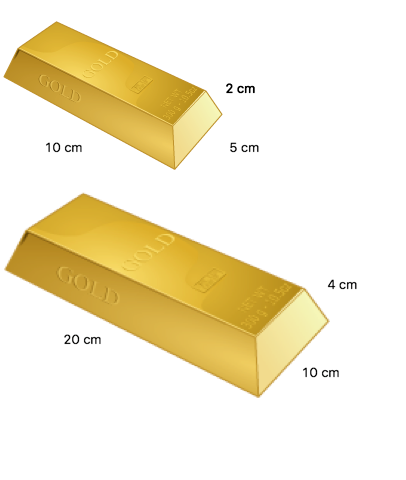
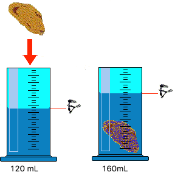

<div class="no_sidecard_main_content">
  <mat-card>
    <div>
      <h1 (click)="handleViewSubject('introductie')">Dichtheid
        <mat-icon *ngIf="getShowSubject('introductie')">keyboard_arrow_up</mat-icon>
        <mat-icon *ngIf="!getShowSubject('introductie')">keyboard_arrow_down</mat-icon>
      </h1>
      <article *ngIf="getShowSubject('introductie')">
        <p>
          Om je heen zie je allerlei verschillende soorten stoffen. Een tafel die van hout of plastic is gemaakt bijvoorbeeld.
          Om je heen zijn ook dure materialen, denk hierbij bijvoorbeeld een goud en zilver. Dit zijn dure metalen waar veel geld mee wordt verdiend.
          Maar hoe weet jij zeker dat een ring of ketting echt van goed is gemaakt? Kun je dat zien aan de kleur of kun je het proeven?
          In de natuurkunde vinden we dit over het algemeen geen betrouwbare methode en we moesten opzoek naar een andere methode.
        </p>
        <p>
          Na onderzoek bleek dat er een verband is tussen de massa en het volume van stoffen.
          Wanneer je een blokje goud hebt en de massa en het volume hiervan bepaald, vervolgens het massa deelt door het volume dan ontdek je dat je steeds op hetzelfde getal uitkomt.
          Dit getal is het verband tussen de massa en het volume en noemen we ook wel de dichtheid.
          We werken dit verder uit in een voorbeeld dat later volgt.
        </p>
        <p>
          Hieronder worden drie begrippen genoemd welke van belang zijn.
          Dit zijn massa, volume en dichtheid.
          Elk van deze begrippen gaan we nu verder verkennen.
        </p>
        <table>
          <tr>
            <th>Begrip</th>
            <th>Betekenis</th>
          </tr>
          <tr>
            <td>
              Massa
            </td>
            <td>
              De totale hoeveelheid stof in een object. We drukken massa uit in kilogram (kg).
              Let op! Gewicht is niet hetzelfde als massa.
              Je kan de massa van een object bepalen op een massa balans.
              Dit noemen we in de volksmond ook weleens een weegschaal.
            </td>
          </tr>
          <tr>
            <td>
              Volume
            </td>
            <td>
              Dit is de ruimte die een voorwerp inneemt. Je kan het volume van een voorwerp bepalen door het op te meten.
              Het volume kun je berekenen door de lengte x breedte x lengte te doen.
              Een voorbeeld: je hebt een kubus (afbeelding) van 5 cm breed, 5 cm lang en 5 cm hoog.
              Het volume is dan: 5 x 5 x 5 = 25.
              De eenheid is kubieke centimeter, dit schrijf je al cm&#179;. Het volume van deze kubus is dus 25 cm&#179;.
            </td>
          </tr>
        </table>
        <p>
          Je kent nu de twee begrippen die van belang zijn voor het bepalen van de dichtheid van een stof.
          Nu gaan we kijken naar het begrip dichtheid zelf. Wat betekent dichtheid?
        </p>
      </article>
    </div>

    <div>
      <h2 (click)="handleViewSubject('dichtheidberekenen')">Dichtheid berekenen
        <mat-icon *ngIf="getShowSubject('dichtheidberekenen')">keyboard_arrow_up</mat-icon>
        <mat-icon *ngIf="!getShowSubject('dichtheidberekenen')">keyboard_arrow_down</mat-icon>
      </h2>
      <article *ngIf="getShowSubject('dichtheidberekenen')">
        <p>
          Je kunt de dichtheid berekenen. Dit doe je met de volgende formule:<br>
          Dichtheid = massa / volume
        </p>
        <p>
          Als we dit altijd zo moeten opschrijven, dan zouden natuurkundigen langzaam ‘gek’ worden.
          Daarom werken ze liever met symbolen.
          Dit zijn letters (vanuit allerlei talen) die het woord kunnen vervangen.
          Bij de formule van dichtheid ziet dat er als volgt uit:<br>
          ρ = m / V
        </p>
        <table>
          <tr>
            <th>Grootheid</th>
            <th>Symbool grootheid</th>
            <th>Eenheid</th>
            <th>Symbool eenheid</th>
          </tr>
          <tr>
            <td>Dichtheid</td>
            <td>ρ</td>
            <td>Gram per kubieke centimeter</td>
            <td>g/cm&#179;</td>
          </tr>
          <tr>
            <td>Massa</td>
            <td>m</td>
            <td>Gram</td>
            <td>g</td>
          </tr>
          <tr>
            <td>Volume</td>
            <td>V</td>
            <td>Kubieke centimeter</td>
            <td>cm&#179;</td>
          </tr>
        </table>
        <p>
          De dichtheid is voor elke soort stof verschillend, maar als je een blokje van goud hebt met twee verschillende groottes, dan is de dichtheid toch hetzelfde.
          De dichtheid van verschillende stoffen kennen we. In onderstaande tabel zie je enkele voorbeelden:
        </p>
        <table>
          <tr>
            <th>Stof</th>
            <th>Dichtheid (g/cm&#179;)</th>
          </tr>
          <tr>
            <th colspan="2">Vaste stoffen</th>
          </tr>
          <tr>
            <td>Aluminium</td>
            <td>2,70</td>
          </tr>
          <tr>
            <td>Diamant</td>
            <td>3,52</td>
          </tr>
          <tr>
            <td>Glas</td>
            <td>2,60</td>
          </tr>
          <tr>
            <td>Goud</td>
            <td>19,30</td>
          </tr>
          <tr>
            <td>Hout balsa</td>
            <td>0,15</td>
          </tr>
          <tr>
            <td>Hout eiken</td>
            <td>0,78</td>
          </tr>
          <tr>
            <td>Lood</td>
            <td>11,35</td>
          </tr>
          <tr>
            <td>Papier</td>
            <td>0,90</td>
          </tr>
          <tr>
            <td>Suiker</td>
            <td>1,58</td>
          </tr>
          <tr>
            <td>Ijs</td>
            <td>0,92</td>
          </tr>
          <tr>
            <td>Ijzer</td>
            <td>7,87</td>
          </tr>
          <tr>
            <td>Zout</td>
            <td>2,17</td>
          </tr>
          <tr>
            <th colspan="2">Vloeistoffen</th>
          </tr>
          <tr>
            <td>Alcohol</td>
            <td>0,79</td>
          </tr>
          <tr>
            <td>Benzine</td>
            <td>0,72</td>
          </tr>
          <tr>
            <td>Olie</td>
            <td>0,90</td>
          </tr>
          <tr>
            <td>Melk</td>
            <td>1,03</td>
          </tr>
          <tr>
            <td>Water</td>
            <td>1,00</td>
          </tr>
          <tr>
            <td>Zeewater</td>
            <td>1,02</td>
          </tr>
          <tr>
            <th colspan="2">Gassen</th>
          </tr>
          <tr>
            <td>Aardgas</td>
            <td>0,00000833</td>
          </tr>
          <tr>
            <td>Koolstofdioxide</td>
            <td>0,002</td>
          </tr>
          <tr>
            <td>Lucht</td>
            <td>0,00129</td>
          </tr>
          <tr>
            <td>Waterdamp</td>
            <td>0,000598</td>
          </tr>
          <tr>
            <td>Zuurstof</td>
            <td>0,00143</td>
          </tr>
        </table>
        <p>
          Dat de dichtheid niet veranderd gaan we in het volgende hoofdstuk laten zien.
        </p>
      </article>
    </div>

    <div>
      <h2 (click)="handleViewSubject('berekeningenopschrijven')">Berekeningen opschrijven
        <mat-icon *ngIf="getShowSubject('berekeningenopschrijven')">keyboard_arrow_up</mat-icon>
        <mat-icon *ngIf="!getShowSubject('berekeningenopschrijven')">keyboard_arrow_down</mat-icon>
      </h2>
      <article *ngIf="getShowSubject('berekeningenopschrijven')">
        
        <p>
          Stel je hebt twee goudkleurige staven (zie afbeelding).
          Van de kleine goudstaaf (bovenste) bepaal je de massa en je ontdekt dat dit 1930 gram weegt.
          De grote staaf weegt maar liefst 15440 gram.<br>
          Het rekenen met dichtheid (of met een andere formule) doe je altijd volgens vijf stappen. Deze zijn:<br>
        </p>
        <ol>
          <li>Schrijf de formule op.</li>
          <li>Schrijf de gegevens op die je weet.</li>
          <li>Kijk of je de formule kan toepassen.</li>
          <li>Vul de gegevens in.</li>
          <li>Schrijf het antwoord op.</li>
        </ol>
        <p>
          We gaan deze vijf stappen doorlopen bij dit voorbeeld we beginnen met de kleine staaf:
        </p>
        <ol>
          <li>De formule is ρ = m / V</li>
          <li>
            De gegevens die ik ken:
            <ul>
              <li>De massa van de staaf is 1930 gram.</li>
              <li>De volume van de staaf is de lengte keer de breedte keer de hoogte, oftewel 10cm * 5cm * 2cm = 100 cm&#179;</li>
            </ul>
          </li>
          <li>Invullen wat ik weet: ρ = 1930 g / 100 cm&#179; = 19,3 g/cm&#179;</li>
          <li>De dichtheid is 19,3 g/cm&#179;</li>
        </ol>
        <p>
          We gaan deze vier stappen doorlopen voor de grote staaf:
        </p>
        <ol>
          <li>De formule is ρ = m / V</li>
          <li>
            De gegevens die ik ken:
            <ul>
              <li>De massa van de staaf is 15440 gram.</li>
              <li>De volume van de staaf is de lengte keer de breedte keer de hoogte, oftewel 20cm * 10cm * 4cm = 800 &#179;</li>
            </ul>
          </li>
          <li>Invullen wat ik weet: ρ = 15440 g / 800 cm&#179; = 19,3 g/cm&#179;</li>
          <li>De dichtheid is 19,3 g/cm&#179;</li>
        </ol>
        <p>
          Zoals je ziet is de dichtheid van de stoffen gelijk.
          Je weet nu dus dat de staven van dezelfde stoffen zijn gemaakt.
          Als je in de tabel van dichtheden kijkt vind je dat de dichtheid van goud gelijk is aan 19,3 g/cm&#179;.
        </p>
        <p>
          We hebben al geleerd dat de dichtheid bepaald welke stof je hebt.
          Omdat de dichtheden van de goudkleurige staven gelijk zijn aan die van goud, hebben we hier dus te maken met de echt goud.
          Let op! Dit geldt natuurlijk voor andere stoffen ook. Omdat je met de dichtheid kan bepalen met welke stof je te maken hebt.
        </p>

        <mat-card class="youtube_clip">
          <iframe width="560" height="315" src="https://www.youtube.com/embed/No3aazQ0Rj4" frameborder="0" allow="autoplay; encrypted-media" allowfullscreen></iframe>
        </mat-card>
      </article>
    </div>

    <div>
      <h2 (click)="handleViewSubject('formuleomvormen')">Formule omvormen
        <mat-icon *ngIf="getShowSubject('formuleomvormen')">keyboard_arrow_up</mat-icon>
        <mat-icon *ngIf="!getShowSubject('formuleomvormen')">keyboard_arrow_down</mat-icon>
      </h2>
      <article *ngIf="getShowSubject('formuleomvormen')">
        <p>
          Tot nu toe is het allemaal erg makkelijk geweest. We gaan nu een stapje verder.
          Het kan namelijk gebeuren dat je de dichtheid van de stof weet en de massa, of alleen de dichtheid en het volume.
          Je kan dan niet meer uit de voeten met de gewone formule.
          Wat moet je dan doen? Op zo’n moment moet je de formule ombouwen. Dit doen we met de 6-3-2-regel. We werken het per situatie een keer uit:
        </p>
        <p>
          <u>Je moet de massa berekenen.</u><br>
          De formule P = m/v voldoet nu niet.
          Je wil namelijk dat de massa (m) vóór het is teken komt te staan.
          Dit kan je doen door de 6-3-2-regel toe te passen.
          Dit werkt als volgt:<br>
          ρ = m / V  3 = 6 / 2<br>
          Je ziet dat de symbolen worden vervangen door getallen.
          De 3 staat voor de <b>Rho</b>, de 6 staat voor de <b>m</b> en de 2 staat voor de <b>V</b>.
          Wanneer je de massa voor het is teken wil hebben, dan wil je dus eigenlijk de 6 voor het is teken krijgen. Dus:<br>
          6 = 2 * 3<br>
          Dit moet je vervolgens weer omzetten naar de symbolen dus:<br>
          m = ρ * V<br>
          Met deze formule kun je de massa van een voorwerp berekenen waarvan je de dichtheid en het volume weet.
        </p>
        <p>
          <u>Je moet het volume berekenen.</u><br>
          Je pakt dit op de zelfde manier.
          Dus je start met de 6-3-2-regel: <br>
          ρ = m / V  3 = 6 / 2<br>
          Je wilt de 2 (dit is de V) voor het is teken halen dus: <br>
          2 = ... . ...<br>
          Je vraagt je af hoe je met 3 en 6 het getal 2 kunt maken. Dit kan je doen door te delen door elkaar dus: <br>
          2 = 6 / 3<br>
          Vervolgens vul je opnieuw de symbolen in en krijg je de juiste formule:<br>
          V = m / ρ
        </p>
        <p>
          We noemen deze stap de formule ombouwen.
          Je moet wanneer je vragen met dichtheid beantwoord altijd kijken op het juiste symbool (en dus grootheid) vóór het is teken staat.
          Is dit niet het geval, dan kun je er niet mee rekenen en moet je de formule ombouwen.
          De 6-3-2-regel werkt hierbij altijd.
        </p>

        <mat-card class="youtube_clip">
          <iframe width="560" height="315" src="https://www.youtube.com/embed/S83Fn1DQ0d8" frameborder="0" allow="autoplay; encrypted-media" allowfullscreen></iframe>
        </mat-card>
      </article>
    </div>

    <div>
      <h2 (click)="handleViewSubject('onderdompelmethode')">Onderdompelmethode
        <mat-icon *ngIf="getShowSubject('onderdompelmethode')">keyboard_arrow_up</mat-icon>
        <mat-icon *ngIf="!getShowSubject('onderdompelmethode')">keyboard_arrow_down</mat-icon>
      </h2>
      <article *ngIf="getShowSubject('onderdompelmethode')">
        <p>
          Tot slot, het kan voorkomen dat je voorwerpen hebt die je niet kunt opmeten.
          Denk bijvoorbeeld aan een knikker. Deze heeft heen lengte of breedte.
          Het is dan lastig het volume te bepalen. De natuurkundige Archimedes had dit probleem ook, maar kwam met een oplossing.
          Hij ontdekte dat het volume van een voorwerp gelijk is aan de hoeveelheid water die verplaatst.
          Denk maar is na, als jij in bad gaat zitten, dan stijgt het waterniveau ook! Dit gebeurt ook als je een knikker in een bak(je) met water doet.
          We kijken naar een voorbeeld:
        </p>
        
        <p>
          In de afbeelding zie je dat er een klompje is. Dit kun je niet opmeten.
          Voordat het klompje in het water gaat is het waterniveau 120 mL.
          Nadat het klompje in het water zit, is het waterniveau gestegen naar 160 mL.
          Dit betekent dus dat het klompje 40 mL ruimte ineemt. We weten nu dus dat het volume gelijk is aan 40 mL.
        </p>
        <p>
          Uit verschillende onderzoeken is gebleken dat 1 mL water gelijk is aan 1 cm&#179;.
          Als je dit weet dan weet je dus ook dat het klompje van 40 mL ook 40 cm&#179; groot is.
        </p>
        <p>
          De manier waarmee je het volume van een voorwerp bepaald door het te dompelen in water, noemen we de dompelmethode.
        </p>
      </article>
    </div>

    <div>
      <h2 (click)="handleViewSubject('oefenopdrachten')">Oefenopdrachten Dichtheid
        <mat-icon *ngIf="getShowSubject('oefenopdrachten')">keyboard_arrow_up</mat-icon>
        <mat-icon *ngIf="!getShowSubject('oefenopdrachten')">keyboard_arrow_down</mat-icon>
      </h2>
      <article *ngIf="getShowSubject('oefenopdrachten')">
        <mat-card class="subject_questions">
          <p>
            1. Een blokje heeft een lengte van 2,0 meter, breedte van 50 cm en een hoogte van 3,2 meter. Dit heeft een massa van 4,3 kilogram, bereken de dichtheid van dit blokje.<br>
            <span *ngIf="getShowAnswers('oefenopdrachten')" class="subject_answer">
              Stap 1 - Formule: ρ = m / V<br>
              Stap 2 - Gegevens: Lengte = 2,0 meter, Breedte = 50 cm, Hoogte = 3,2 m, Massa = 4,3 kg<br>
              Stap 3 - Omrekenen: V = 2,0 m * 0,5 m (50 cm) * 3,2 m = 3,2m&#179;<br>
              Stap 4 - Invullen: ρ = 4,3 / 3,2 = 1,34 kg/m&#179;<br>
              Stap 5 - Antwoord: Het blokje heeft een dichtheid van 1,34 kg/m&#179;<br>
            </span>
          </p>
          <p>
            2. Een tinnen soldaatje heeft een volume van 0,15 m3 met een massa van 1095 kg. Bereken de dichtheid van tin.<br>
            <span *ngIf="getShowAnswers('oefenopdrachten')" class="subject_answer">
              Stap 1 - Formule: ρ = m / V<br>
              Stap 2 - Gegevens: V = 0,15 m&#179;, m = 1095 kg<br>
              Stap 3 - Omrekenen: Niet van toepassing<br>
              Stap 4 - Invullen: ρ = 1095 / 0,15 = 7300 kg/m&#179;<br>
              Stap 5 - Antwoord: De dichtheid van tin is 7300 kg/m&#179;<br>
            </span>
          </p>
          <p>
            3. Annemarie heeft een betonnen muur in de tuin staan, deze muur heeft een massa van 8400 kg. De oppervlakte van de muur is 2 m&#178; en heeft een dikte van 1,5 m. Wat is de dichtheid van beton?<br>
            <span *ngIf="getShowAnswers('oefenopdrachten')" class="subject_answer">
              Stap 1 - Formule: ρ = m / V<br>
              Stap 2 - Gegevens: Massa = 8400 kg, Oppervlakte = 2 m&#178;, Dikte = 1,5 m.<br>
              Stap 3 - Omrekenen: V = 2 * 1,5 = 3m&#179;<br>
              Stap 4 - Invullen: ρ = 8400 / 3 = 2800 kg/m&#179;<br>
              Stap 5 - Antwoord: De dichtheid van beton is 2800 kg/m&#179;<br>
            </span>
          </p>
          <p>
            4. Theo heeft voor zijn verjaardag een ijsscultuur laten maken. De massa van het blok ijs is 5502 gram en heeft een inhoud van 6 dm&#179;. Bereken de dichtheid van het ijssculptuur.<br>
            <span *ngIf="getShowAnswers('oefenopdrachten')" class="subject_answer">
              Stap 1 - Formule: ρ = m / V<br>
              Stap 2 - Gegevens: Massa = 5502 g, Volume = 6 dm&#179;.<br>
              Stap 3 - Omrekenen: 5502 g = 5,502 kg. 6dm&#179; = 0,006 m&#179; <br>
              Stap 4 - Invullen: ρ = 5,502 / 0,006 = 917 kg/m&#179;<br>
              Stap 5 - Antwoord: De dichtheid van het ijssculptuur is 917 kg/m&#179;<br>
            </span>
          </p>
          <p>
            5. Johan heeft een dijbeen (gedeelte bot) met de massa van 6080 gram. De inhoud van dit bot is 0,0032 m3, bereken de dichtheid van Johan’s dijbeen.<br>
            <span *ngIf="getShowAnswers('oefenopdrachten')" class="subject_answer">
              Stap 1 - Formule: ρ = m / V<br>
              Stap 2 - Gegevens: Massa = 6080 g, Volume = 0,0032 m&#179;.<br>
              Stap 3 - Omrekenen: 6080 g = 6,08kg <br>
              Stap 4 - Invullen: ρ = 6,08 / 0,0032 = 1900 kg/m&#179;<br>
              Stap 5 - Antwoord: De dichtheid van Johan's dijbeen is 1900 kg/m&#179;<br>
            </span>
          </p>
          <p>
            6. Lieke heeft een berkenboom stronk in haar tuin staan, nu wilt zij deze stronk weghalen maar dit gaat erg moeizaam omdat het een massa heeft van 330 kg.
            De stronk heeft een volume van 0,5 m3, bereken de dichtheid van berkenhout.<br>
            <span *ngIf="getShowAnswers('oefenopdrachten')" class="subject_answer">
              Stap 1 - Formule: ρ = m / V<br>
              Stap 2 - Gegevens: Massa = 330 kg, Volume = 0,5 m&#179;.<br>
              Stap 3 - Omrekenen: Niet van toepassing<br>
              Stap 4 - Invullen: ρ = 330 / 0,5 = 660 kg/m&#179;<br>
              Stap 5 - Antwoord: De dichtheid van berkenhout 660 kg/m&#179;<br>
            </span>
          </p>
          <button mat-button (click)="handleShowAnswers('oefenopdrachten')">Toon antwoorden</button>
        </mat-card>
      </article>
    </div>

    <div>
      <h2 (click)="handleViewSubject('appletdichtheid')">Applet Dichtheid
        <mat-icon *ngIf="getShowSubject('appletdichtheid')">keyboard_arrow_up</mat-icon>
        <mat-icon *ngIf="!getShowSubject('appletdichtheid')">keyboard_arrow_down</mat-icon>
      </h2>
      <article *ngIf="getShowSubject('appletdichtheid')">
        <mat-card class="applet">
          <iframe src="https://phet.colorado.edu/sims/density-and-buoyancy/density_nl.html" width="800" height="600" scrolling="no" allowfullscreen></iframe>
        </mat-card>
        <mat-card class="applet">
          <iframe src="https://h5p.org/h5p/embed/170583" width="1090" height="662" frameborder="0" allowfullscreen="allowfullscreen"></iframe><script src="https://h5p.org/sites/all/modules/h5p/library/js/h5p-resizer.js" charset="UTF-8"></script>
        </mat-card>
      </article>
    </div>
  </mat-card>
</div>
